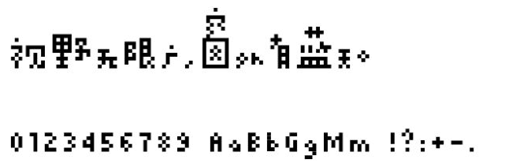

字样资料 / 方正基础像素
方正基础像素
资料图，不作逐字字库覆盖验证。 · 字高未核定 · 简体
原始资料图 · 官方试字截图

资料图不代表原生字号，不能按像素尺寸比较。
来源与字样信息
- 家族
- 方正基础像素
- 资料类型
- 官方试字截图
- 核验边界
- 官网单次限11字，分段截图排版；保留抗锯齿显示。基础像素CSS字号126.425px、点阵冯48px，不作相同原生尺寸比较。 原始字体字框尚未实测，图片像素尺寸不代表原生网格。
- 字符范围
- 简体
- 样本文字
- 视野无限广，窗外有蓝天。
- 拉丁样文
- 0123456789 AaBb GgMm !?:+-.
- 覆盖说明
- 资料图，不作逐字字库覆盖验证。
- 缺字
- 资料图不作逐字覆盖验证
- 风格
- 参考资料
- 用途
- 研究参考
- 字形来源
- 为2005年深圳双年展形象设计而作，以较少像素构造，字宽和字高不统一。
- 授权状态
- 以来源及权利人许可为准
- 许可说明
- 字体与官网字样归方正字库及相应设计权利人；商业字体，非开源。 仅固定字样与来源，不提供字体或授予使用许可。
- 说明
- 官网单次限11字，分段截图排版；保留抗锯齿显示。基础像素CSS字号126.425px、点阵冯48px，不作相同原生尺寸比较。 原始字体字框尚未实测，图片像素尺寸不代表原生网格。
- 来源
- 查看原始资料
仅展示固定字样，不提供字体文件。预览不授予字体使用许可；样文覆盖不等于完整字库覆盖，实际使用前请核实来源项目的适用授权。